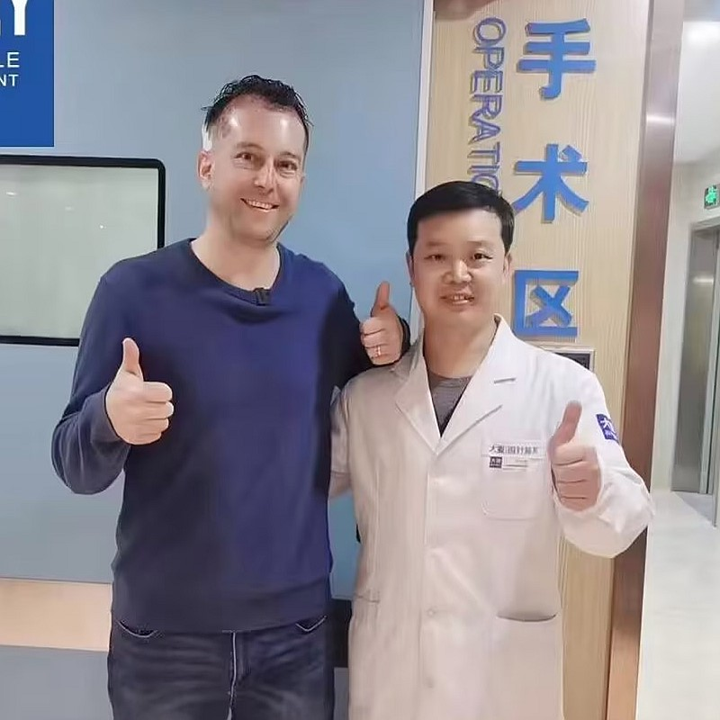
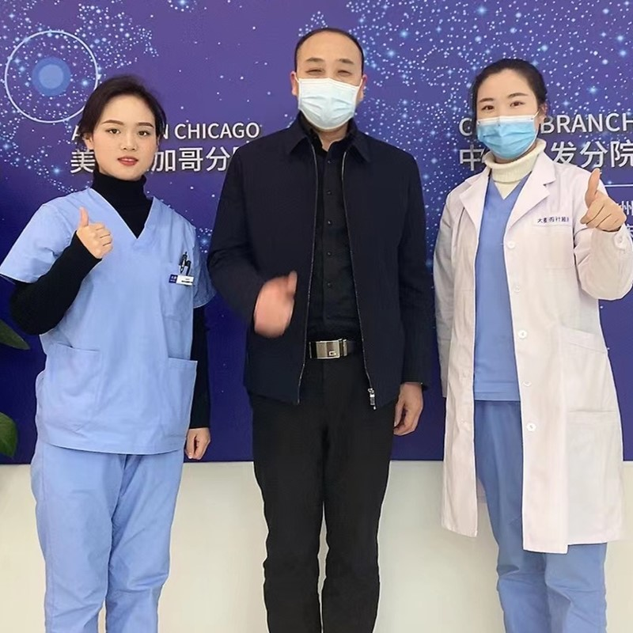

Artistic beard and mustache transplantation for masculine, natural-looking results

Our beard transplant procedure combines surgical expertise in creating masculine, natural-looking beards and mustaches. Whether you want to fill in patchy areas, create a fuller beard, or achieve your ideal beard density, our specialized team can help you achieve your perfect facial hair goals.
Beard transplant tailored to your facial bone structure
Art and mustache for results
Personalized beard design based on your goals and facial features
Precise mapping of your ideal beard and mustache design
Selective extraction of follicles from donor area
Precision incisions following natural beard growth pattern
Individual placement for perfect density
Comprehensive care and 12-month follow-up
Industry leader with proven results
Pioneer and leader in microneedle hair transplant technology since 2006
Across major cities in China, all with the same high standards
Innovative microneedle and implant pen technology for superior results
Trusted by patients from around the globe for life-changing results
Full English support for international patients throughout treatment
State-of-the-art facilities and strict safety protocols for your peace of mind
See the amazing transformations our patients have achieved


Moments captured with our satisfied patients

Posing with our medical team after successful procedure

Celebrating fantastic results with our doctors

Another satisfied patient shares their joy

Patient with our specialist before discharge

Happy patient with Dr. Chen post-treatment

Excited patient showing their new look
Hear from our satisfied patients around the world
"I could never grow a full beard! Barley's beard transplant gave me a thick, masculine beard that grows naturally! I feel so much more confident now!"
"My beard was patchy and thin! After the transplant, I have a full, natural beard! The microneedle technology made it look perfect! I'm so happy!"
"I searched Google for months before finding Barley! The beard transplant gave me exactly what I wanted! The doctor was so skilled! Perfect results!"
"I had a scar on my cheek that kept hair from growing! The transplant fixed it completely! Now I have an even, natural beard! Thank you Barley!"
"I wanted a goatee but couldn't grow it! Barley's beard transplant gave me the perfect goatee! It looks completely natural and grows normally!"
"My beard was so thin that I was embarrassed! After the transplant, I have a thick, manly beard! The results are amazing! I couldn't be happier!"
Experience our modern and comfortable facilities

Our state-of-the-art facility

Relax in our premium lounge

Sterile and advanced

Private and professional

Comfortable post-op space

Welcoming entrance
Find answers to common questions about hair transplantation
Contact us for a free consultation
15810155700
+86 15810155700
hairtransplant@qq.com